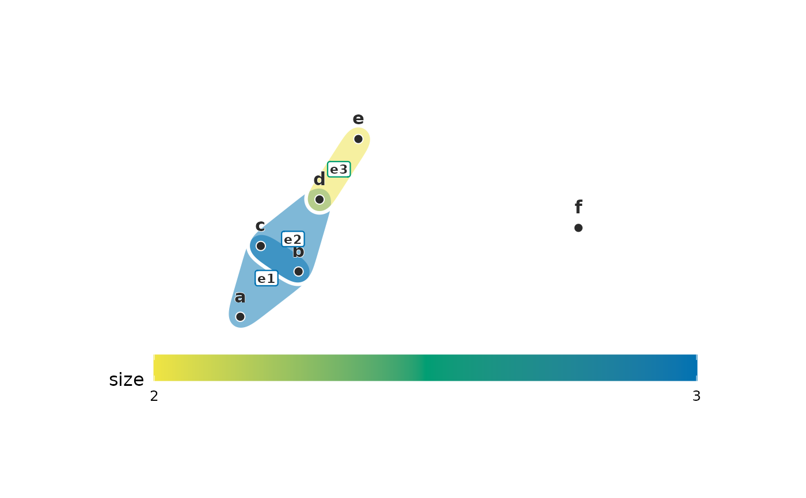
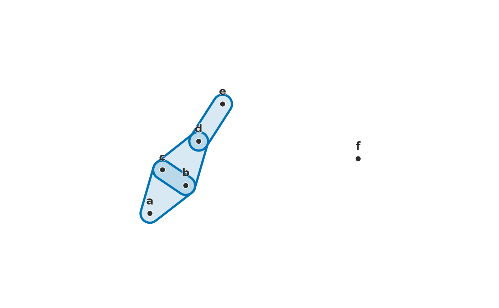
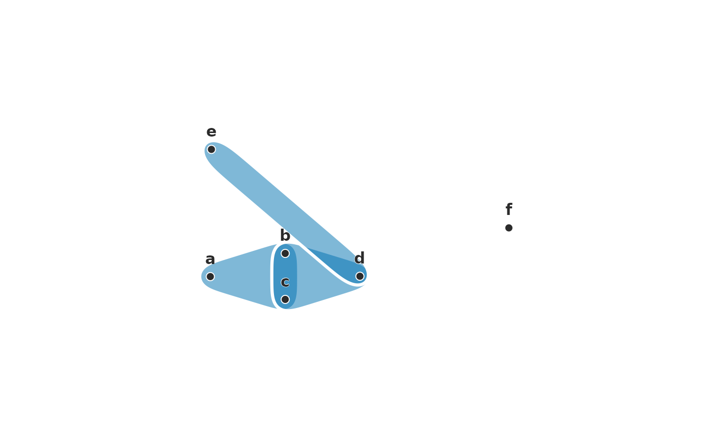
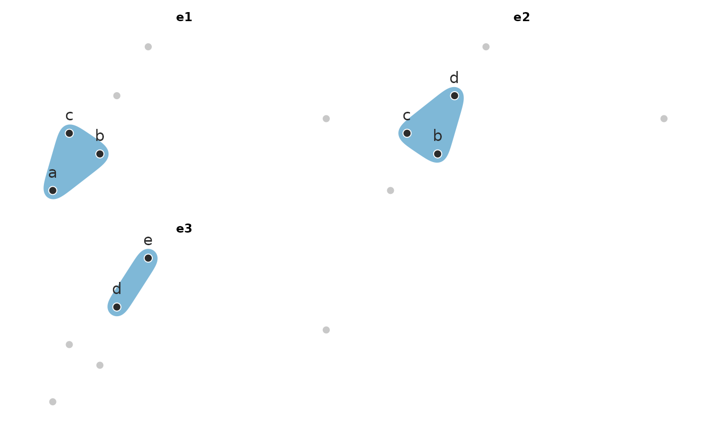
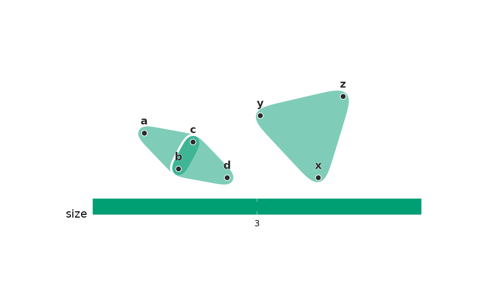
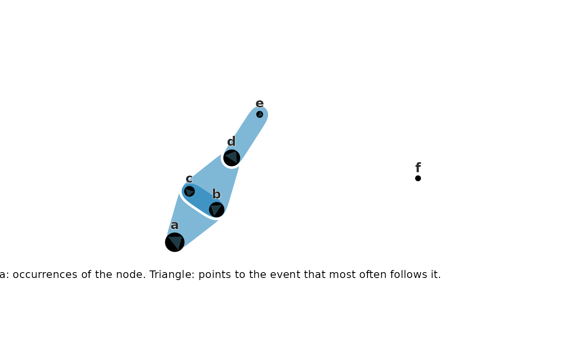
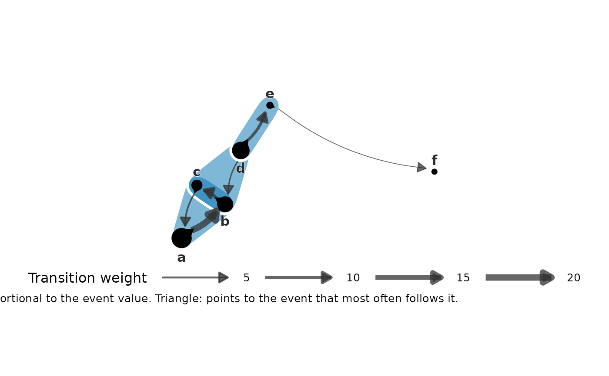
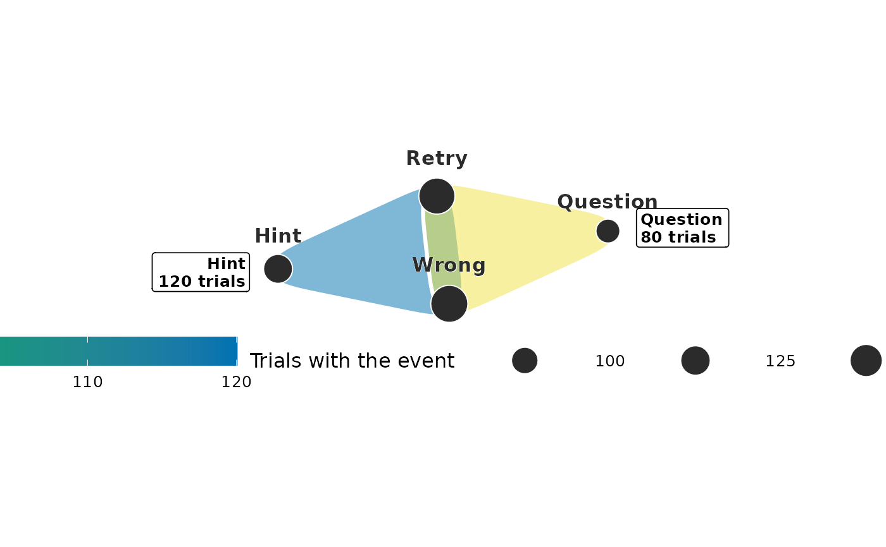

Draws every hyperedge as a smooth pebble around its members – the convex
hull of the members, widened by padding and with its corners smoothed
away – in a translucent fill parted from its neighbours by a white seam.
Every member is guaranteed to lie inside its pebble. The default layout places the bipartite star expansion
(nodes and hyperedges together), which gives each hyperedge a position of
its own among its members; hulls fan out instead of piling onto shared
nodes, and hyperedge labels sit at those positions. Hulls can be coloured
by hyperedge size, by a column of the edge metadata, or by any value
supplied per hyperedge, and outlined with a line type by the same kinds of
selector. A hyperedge with a single member is drawn as its node alone.
Usage
# S3 method for class 'net_hg'
plot(
x,
layout = c("bipartite", "spring", "circle"),
center = NULL,
seed = 1L,
color_by = NULL,
linetype_by = NULL,
labels = TRUE,
label_size = 4.2,
edge_labels = FALSE,
edge_label_size = 3,
dismantled = FALSE,
ncol = NULL,
node_size = 2.5,
detail = 5,
outline = "white",
alpha = 0.5,
linewidth = 1.1,
padding = 0.045,
legend_title = NULL,
node_sizes = NULL,
direction = NULL,
arrow_style = c("inside", "outside"),
node_fill = "#000000",
arrow_fill = NULL,
transitions = NULL,
size_title = NULL,
titles = NULL,
title_prefix = "",
notes = NULL,
unit = NULL,
pieces = NULL,
title_gap = 0.06,
group = NULL,
...
)Arguments
- x
A
net_hgwith at least one hyperedge of two or more members. Draw a part of a large hypergraph by passinghg_subset()first.- layout
"bipartite"(default; a Fruchterman-Reingold layout of the star expansion, nodes and hyperedges placed together),"spring"(the same on the clique projection),"circle", or a data.frame withnode,xandycolumns to reuse node coordinates across panels (hyperedges then sit at the centroid of their members). The two force-directed layouts place each connected component separately and pack the results; alayouttable is used exactly as given.- center
Node names to place in the middle of the picture, such as the outcome states every hyperedge ends in. Under
"bipartite"and"spring"they are held on a small ring at the centre while the rest of the layout arranges around them; under"circle"they sit inside the ring of the other nodes. Names that are not nodes of this hypergraph are skipped, so one vector can serve several subsets; an error is raised only when none of them is.NULL(default) places every node freely. Not used with alayouttable.- seed
Seed for the force-directed layouts (default
1); the caller's random number stream is left untouched.- color_by
Colour of the hulls:
NULL(the hyperedges' count attribute described above, else one colour),"size"(hyperedge cardinality, sequential scale), the name of a column in the edge metadata (x$edge_data), a vector named by hyperedge, or a vector with one value per hyperedge. Character or factor values get the Okabe-Ito palette; numeric values a sequential scale built from it.- linetype_by
Outline line type of the hulls, resolved like
color_by; discrete only.- labels
TRUE(default) writes the node names,FALSEwrites none, and a character vector named by node replaces the names shown.- label_size, node_size
Text and point sizes (defaults
4.2and2.5).- edge_labels
Name the hyperedges on the figure.
FALSE(default) writes nothing,TRUEwrites the hyperedge names, or pass a vector named by hyperedge to write something else. Under the bipartite layout each label sits at the hyperedge's own position; under the projection layouts, just outside the member furthest from the centre, clear of the crowded overlap.- edge_label_size
Text size for
edge_labels(default3), and for the panel titles whendismantled = TRUE. A title is never cut to fit its panel – a clipped hyperedge name reads as a different hyperedge – so lower this, orncol, if long names collide.- dismantled
Draw one panel per hyperedge instead of one figure with every hull overlaid (default
FALSE). All panels share the layout, so positions are comparable; each panel greys out the non-members and is titled with its hyperedge name.edge_labelsdoes not apply.- ncol
Columns in the panel grid when
dismantled = TRUE(default: roughly square).- detail
How much of the hull's shape the smoothing keeps: the width, in harmonics, of the Gaussian low-pass applied to the outline. The default
5gives rounded, tapering petals;3is rounder still,8stays close to the members, andInfdraws the unsmoothed rounded hull.- outline
Outline colour:
"white"(default) draws seams that part overlapping hyperedges;"fill"outlines each hyperedge in its own colour (pair it with a loweralpha, e.g.0.15); any other colour is used as given.- alpha
Fill transparency (default
0.5); the outline is always drawn at full strength.- linewidth
Width of the outlines (default
1.1).- padding
Room around the member positions as a fraction of the layout extent (default
0.045). It also sets how far apart the layout packs disconnected components, so that two components' pebbles never touch and imply a member they do not share.- legend_title
Legend title for
color_by; defaults to the selector's name.- node_sizes
Size every node by a value, such as how often the node occurs: a data.frame with a node column and a value column, or a numeric vector named by node. The columns are
nodeandvaluewhen those names are present; otherwise the one character (or factor) column holds the node names and the one numeric column the values, so a table such asdata.frame(state, trials)is read as it is. Every node of the hypergraph needs a non-negative value; names that are not nodes are skipped, so one table serves everyhg_subset(). Withoutdirectionthe nodes are points whose area follows the value (ggplot2::scale_size_area(), largest 10 mm), with a size legend, and each label sits just above its dot. Withdirectionthey are circles in data units (the figure has a fixed 1:1 aspect): the largest has a radius of 4% of the layout extent and none is smaller than 30% of that radius, so the rarest nodes stay visible, and a caption says what area and triangle show.NULL(default) draws plain points.- direction
Mark on each circle where the walk goes next: a data.frame with columns
from,toand a weight –weight, or else the one other numeric column, such astrials(how oftentofollowsfrom; repeated pairs are summed). Each node gets a triangle pointing at the other node that follows it with the largest weight, ties broken by node name; a node that nothing else follows (a sink, or only itself) gets no triangle. Rows naming a node that is not in the hypergraph are skipped. Requiresnode_sizes.- arrow_style
"inside"(default; a triangle inscribed in the circle, its apex on the rim facing the next node) or"outside"(the circle drawn out into a tip beyond its rim). An outside tip that points upward moves that node's label below the circle.- node_fill
Colour of the circles drawn by
node_sizeswithdirection(default black).- arrow_fill
Colour of the
directiontriangles.NULL(default) is a dark slate ("#1F3A44") for"inside"andnode_fillfor"outside".- transitions
Draw the moves between nodes as curved arrows: a data.frame with
from,toand a weight, read likedirection. Line width follows the weight; a node followed by itself gets a small loop below it. Rows naming a node that is not in the hypergraph are skipped. The width legend is titled with the capitalisedunitfollowed by "making the transition" whenunitis given, and "Transition weight" otherwise.- size_title
What the node area shows (e.g.
"trials with the event"): the caption reads "Circle area: " followed by it and the point size legend is titled with it.NULL(default) uses the unit followed by "with the event" when there is a unit, and otherwise says the area is proportional to the event value.- titles
Write a title box beside every hyperedge, just outside its pebble on the side facing away from the centre of the figure.
NULL(default) writes the hyperedges' count attribute described above (not whendismantled = TRUE), else none;FALSEwrites none;TRUEwrites the hyperedge names; a selector resolved likecolor_by(an edge-metadata column, a vector named by hyperedge, or one value per hyperedge) must be numeric and adds a second line with that number andunit(e.g. "3,667 trials"). A hyperedge with a single member gets its box beside that node. Boxes are placed in order of decreasing value (name breaks ties) and a box that would sit on an earlier one moves below it.- title_prefix
Text written before each hyperedge name in its title box (default
""), such as"Mostly ".- notes
A further line for some title boxes: a character vector named by hyperedge, or a data.frame with a
notecolumn and the hyperedge names in ahyperedge,edgeorgroupcolumn. Hyperedges without a note get none; names that are not hyperedges are skipped. Requirestitles.- unit
The word for what the values count (e.g.
"trials","steps"). It titles thecolor_bylegend (capitalised, unlesslegend_titleis given), follows the number in each title box, and names the node area ("trials with the event") and the transition widths.NULL(default) is the unit the hypergraph records ("sequences"forgroup_hypergraph()of a clustering), else the name of the hyperedges' count attribute described above, else those texts stay generic.- pieces
How the bipartite layout places a hypergraph that falls into disconnected pieces:
"row"(default; every piece is laid out in a frame of its own, as if drawn alone, and the frames are set side by side 1.4 frame widths apart, in order of the piece's most prominent hyperedge – seetitles– with a piece of one node at the middle of its frame) or"packed"(pieces are laid out one by one and packed into a square frame). Only the bipartite layout has pieces;"row"given with another layout is an error.- title_gap
Distance of each title box beyond its pebble, in layout units (the layout spans 0 to 1; default
0.06).- group
Draw one group only: the name of a value of the hyperedges'
groupattribute, such as"Cluster 1"of agroup_hypergraph()built from a clustering of sequences. Only that group's hyperedges and their members are drawn; for clustered sequences each node is sized by the sequences of the group containing it (unlessnode_sizesis given), each set is named by the states it adds to those every drawn set shares (listed in the subtitle), the figure is titled with the group and its number of sequences,titlesdefaults toFALSEand the legends are stacked. A name that is not a group, or a hypergraph without agroupattribute, raiseshypernets_bad_input.NULL(default) draws every hyperedge.- ...
Unused; for S3 consistency.
Value
A ggplot object (with dismantled = TRUE, one facet per
hyperedge). With node_sizes and direction the nodes are polygon
layers in data units and the caption names what circle area and
triangle show; with node_sizes alone they are points with a size
legend. Title boxes are the last layer.
Details
A hypergraph whose hyperedges carry one numeric attribute – such as a
trials count that group_hypergraph() kept because it is constant
within each group – is drawn by that attribute with no further argument:
it colours the pebbles, writes a title box with the count beside each
one, and names the unit of the legends. Of several numeric attributes,
the one that varies between hyperedges is read when only one does (a
membership share of 1 on every hyperedge is passed over); otherwise none
is. color_by, titles and unit override it.
Node labels are bold with a white halo, the legends sit below the plot
(a colour bar 2.5 cm per key, discrete legends at most four keys to a
row) and the plot has wide margins (40, 130, 30 and 130 pt) so title
boxes outside the pebbles are not cut. The look of
earlier versions is partly available through arguments: alpha = 0.45,
label_size = 3 and pieces = "packed"; the legend position and margins
through ggplot2::theme() added to the result.
A hypergraph that falls into several disconnected pieces is laid out one piece at a time and the pieces are then packed into a roughly square frame. A force-directed layout has no force at all between two disconnected components – they repel and nothing pulls back – so laying the whole hypergraph out at once lets a stray hyperedge drift to the edge of the picture and set the scale for everything else, leaving the connected structure a speck in the middle. Packing keeps every component at its own size and the frame spent on structure.
Conditions
hypernets_bad_input for an invalid selector or layout, a node_sizes
that misses a node or holds a negative value, a direction or
transitions table without from, to and one non-negative numeric
weight, a direction without node_sizes, titles that are not
numeric, notes without titles, an invalid unit, title_prefix or
title_gap, pieces = "row" with a layout other than
"bipartite", or node overlays or titles combined with
dismantled = TRUE.
References
Coupette, C., Hartung, D., & Katz, D. M. (2024). Legal hypergraphs. Philosophical Transactions of the Royal Society A, 382(2270), 20230141. doi:10.1098/rsta.2023.0141
Fruchterman, T. M. J., & Reingold, E. M. (1991). Graph drawing by force-directed placement. Software: Practice and Experience, 21(11), 1129-1164. doi:10.1002/spe.4380211102
Examples
dat <- data.frame(
member = c("a", "b", "c", "b", "c", "d", "d", "e", "f"),
event = c("e1", "e1", "e1", "e2", "e2", "e2", "e3", "e3", "e4")
)
hg <- group_hypergraph(dat, "member", "event")
plot(hg, color_by = "size", edge_labels = TRUE)

plot(hg, detail = Inf, outline = "fill", alpha = 0.15)

plot(hg, center = c("b", "c"))

plot(hg, dismantled = TRUE)

# disconnected pieces are laid out separately and packed
apart <- group_hypergraph(
data.frame(member = c("a", "b", "c", "b", "c", "d", "x", "y", "z"),
event = c("e1", "e1", "e1", "e2", "e2", "e2", "e3", "e3", "e3")),
"member", "event"
)
plot(apart, color_by = "size")

# circles sized by how often each node occurs, pointing where it goes next
counts <- c(a = 40, b = 25, c = 12, d = 30, e = 5, f = 2)
moves <- data.frame(from = c("a", "b", "c", "d", "d", "e"),
to = c("b", "c", "a", "e", "b", "f"),
weight = c(20, 9, 4, 8, 3, 1))
plot(hg, node_sizes = counts, direction = moves,
size_title = "occurrences of the node")

plot(hg, node_sizes = counts, direction = moves, transitions = moves,
arrow_style = "outside")

# groups of events with their trial counts: the count colours the pebbles
# and writes a title box per group; points sized by how many trials
# contain each event
members <- data.frame(
group = c("Hint", "Hint", "Hint", "Question", "Question", "Question"),
state = c("Wrong", "Hint", "Retry", "Wrong", "Question", "Retry"),
trials = c(120, 120, 120, 80, 80, 80)
)
trial_groups <- group_hypergraph(members, actor = "state", group = "group")
event_trials <- data.frame(state = c("Wrong", "Hint", "Question", "Retry"),
trials = c(200, 120, 80, 190))
plot(trial_groups, node_sizes = event_trials)
